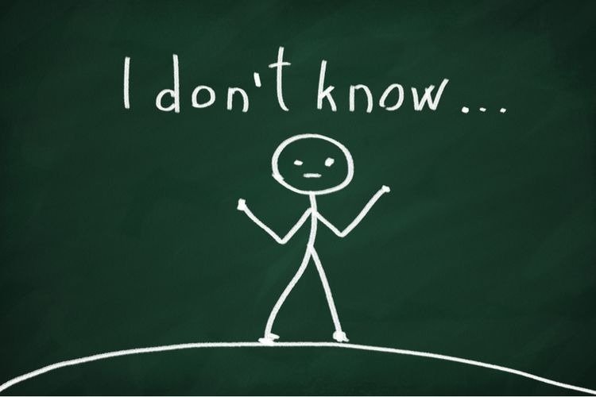

Saya Tahu bahwa Saya Tidak Tahu
Kompas.com - 05/09/2020, 19:41 WIB
Editor Heru Margianto

SAYA sempat dumeh alias takabur merasa tahu banyak hal. Akhirnya saya tahu bahwa ternyata saya tidak tahu bahwa saya tidak tahu sangat amat terlalu banyak hal di alam semesta ini.
Kombinatorika
Misalnya, saya tahu bahwa saya tidak tahu apa sebenarnya yang disebut sebagai kombinatoritika yang konon mendayagunakan teori graf apalagi definisi serta manfaat penerapannya.
Semula saya tahu bahwa tidak tahu bahwa sains adalah bahasa sains. Semula saya tidak tahu bahwa ikan hiu tidak pernah main mata sebab tidak bisa mengedipkan mata.
Saya juga tidak tahu bahwa ada buaya air asin dan mereka sengaja membuka mulut lebar-lebar sebagai ventilasi menyejukkan otak mereka masing-masing.
Semula saya tidak tahu bahwa istilah air putih, salah satu, ulang tahun, sakit hati sebagai ungkapan sakit perasaan sebenarnya keliru.
Saya tahu bahwa lebih banyak domba ketimbang manusia di Selandia Baru tetapi saya tidak tahu bahwa lebih banyak kura-kura ketimbang manusia di kepulauan Seychelles.
Saya tahu bahwa warna salju adalah putih namun saya tidak tahu bahwa di Siberia katanya ada salju berwarna oranye.
Jembatan Gerbang Emas di San Francisco berwarna oranye tetapi saya tidak tahu bahwa semula jembatan tersohor tersebut diinginkan oleh arsiteknya untuk dicat warna hitam dengan garis kuning.
Paus
Sampai sekarang saya belum tahu kenapa hitungan permainan tenis dimulai dari 0 kemudian 15 lalu 30 maka seharusnya dilanjutkan dengan 45 tetapi ternyata 40.
Sama halnya semula saya tidak tahu bahwa saya tidak tahu bahwa 111.111.111X111.111.111=1.234.678.987.654.321 tetapi saya tetap tidak tahu kenapa bisa rancak begitu itu.
Saya tidak tahu dan sampai kini saya tidak mau tahu karena tidak percaya bahwa asal-usul unta ternyata bukan Semenanjung Arab tetapi Amerika Utara.
Saya tahu bahwa paus bukan ikan tetapi saya tidak tahu bahwa paus ternyata punya pusar seperti Sri Paus.
Meski falsafah Jawa bilang ojo gumunan namun saya tetap nekad gumun setelah tahu bahwa lantai istana Nijo sengaja dibuat dari kayu agar berbunyi apabila diinjak agar ketahuan jika ada penyusup.
Anda mungkin tahu bahwa ada jamu Buyung Upik rasa durian namun belum tentu Anda tahu bahwa ada minyak wangi bikinan Inggris beraroma bau keju.
Tahukah Anda bahwa menguap (angop) lebih menular antar sanak-keluarga ketimbang antar manusia tanpa hubungan keluarga? Mungkin akibat sopan-santun?
Semula saya juga tidak tahu bahwa ternyata ikan bisa batuk entah menular atau tidak. Saya tidak tahu bahwa di Afrika Selatan ada sebuah kawah akibat kejatuhan meteor lebih luas ketimbang Irlandia.
Einstein
Saya tahu teori Albert Einstein adalah e=mc2 namun saya tidak mampu menjelaskan kenapa sebab sama sekali tidak mengerti maknanya meski tidak pernah mengaku tidak mengerti agar jangan sampai ketahuan bahwa saya tidak tahu.
Saya tidak tahu sebab belum pernah berjumpa ulat kaki-seribu yang di malam hari bisa bersinar seperti kunang-kunang.
Saya tahu bahwa saya semula tidak tahu bahwa jam pertama di zaman dahulu kala memang berangka 12 namun berjari bukan dua tetapi cuma satu.
Saya juga semula tidak tahu bahwa usia makhluk hidup tertua bukan kura-kura tapi cacing-tabung yang hidup di dasar laut dalam yang konon bisa berusia lanjut sampai 600 tahun.
Saya tahu ukuran tubuh gajah jauh lebih besar ketimbang anjing namun saya tidak tahu bahwa ternyata ukuran jantung seekor gajah kira-kira sama besar dengan jantung seekor anjing.
Saya tahu bahwa setiap 17 tahun sejenis serangga disebut Magicicada tampil ke permukaan bumi Amerika tetapi saya tidak tahu setiap berapa tahun gareng pung sejenis Magicicada tampil ke permukaan bumi Indonesia.
Semula saya tidak tahu tapi sekarang saya tahu bahwa tulisan kata bahasa Inggris: suns dalam huruf kecil seperti yang digunakan laptop ini tetap sama apabila dibaca terbalik dengan memutar balik naskah yang sedang anda baca ini. Dibaca dari kiri ke kanan secara terbalik atas ke bawah juga tetap sama suns dengan dibaca dari kanan ke kiri.
Saya tidak tahu angka pertama adalah satu atau nol. Saya tidak tahu kapan dan siapa yang menemukan angka nol namun konon sukma angka nol sudah disadari masyarakat Babilonia meski baru pada sekitar abad VI benar-benar dimantapkan sebagai angka nol oleh sang matematikawan India, Brahmagupta. Konon.
Saya juga tidak tahu kenapa enam dalam bahasa latin adalah sex dan apakah ada kaitan dengan kata yang 100 persen sama dalam bahasa Inggris.
Kemanusiaan
Sampai kini saya masih tidak tahu di mana saja masyarakat adat terpaksa menderita akibat digusur atas nama pembangunan.
Saya tidak tahu di mana saja di persada Nusantara tercinta ini terjadi pelanggaran hak asasi manusia atas nama pembangunan dan kekuasaan.
Namun sebenarnya semua itu akibat saya tidak tahu bahwa saya tahu bahwa saya tidak tahu bahwa masih terlalu amat sangat banyak perihal di alam semesta ini yang saya tidak tahu.
Misalnya saya sudah tahu bahkan yakin bahwa kemanusiaan adalah mahkota peradaban namun saya tidak kunjung mampu tahu bagaimana cara mewujudkan keyakinan bahwa kemanusiaan adalah mahkota peradaban menjadi kenyataan kehidupan di planet bumi yang setahu saya cuma satu dan satu-satunya ini.